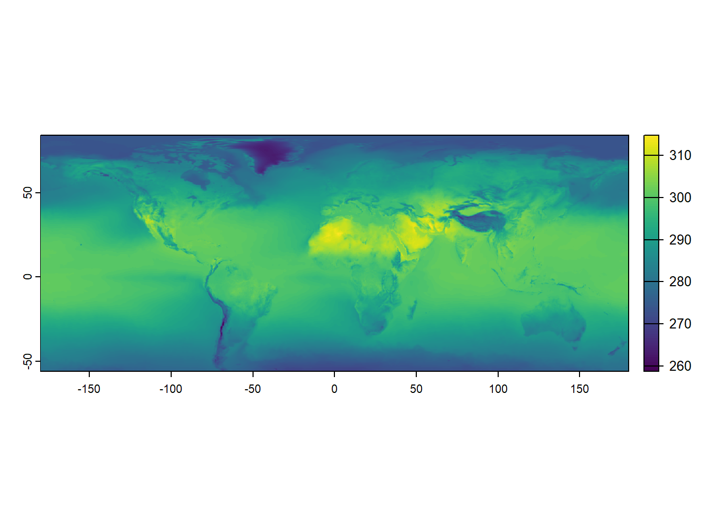
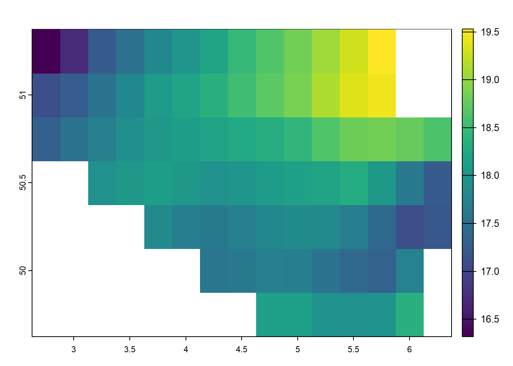

terra::rast()Working with raster data in R

What Are Raster Data?
Raster data consists of a grid of evenly shaped cells, where each cell represents a single observation. Essentially, raster data functions like a simple data table, storing information in a structured format. This data type efficiently represents spatial information such as elevation, temperature, or land cover. The uniform grid structure allows for easy analysis and manipulation, making raster data an essential tool in GIS work.
Raster data and image classification in remote sensing
In remote sensing, this raster grid is often referred to as a digital image. Each pixel contains a Digital Number (DN) or Brightness Value (BV) that represents the average radiance from a small area on the Earth’s surface. When images have multiple bands (multi-/ hyperspectral sensors), each band captures a different part of the electromagnetic spectrum. This lets us explore surface features like vegetation, water, or buildings in much greater detail—making digital images a powerful form of raster data in geospatial analysis. Image classification is the process of automatically grouping all pixels in a raster image into meaningful classes—such as land cover types—based on their spectral signatures (the way surfaces reflect or emit energy across different bands).
Unsupervised classification: The software first groups pixels based on similarities (e.g., using clustering or spatial autocorrelation), then analysts interpret and label these groups. This method is helpful in complex or unfamiliar terrain.
Supervised classification: Analysts define known training areas for each land cover type. The algorithm uses these as references to classify the rest of the image. This approach is more targeted but can be more subjective, depending on how training data is chosen.

To work with raster data, we need an understanding of the metadata that comes with the data. Metadata in raster data refers to globally stored information about the geometries of the dataset. This metadata remains consistent for all observations, ensuring uniformity across the data. The spatial location of each observation is determined by its position within the data table, allowing for precise georeferencing. Without this crucial metadata, raster data would be indistinguishable from simple image files, lacking the spatial context necessary for geographic analysis. Metadata plays a vital role in interpreting and utilizing raster data effectively, making it a fundamental component in their application.
Necessary metadata in raster data includes several key components that define its structure and spatial characteristics. Raster dimensions specify the number of columns, rows, and total cells, which determine the overall size of the dataset. The raster’s extent, similar to a bounding box in vector data, defines the spatial boundaries of the dataset. Resolution refers to the size of each raster cell, impacting the level of detail captured in the data. Lastly, the coordinate reference system (CRS) is essential, as it determines the precise geographic location of the raster layer on the Earth’s surface. Together, these metadata elements provide crucial information that allows for accurate interpretation and analysis of raster data.
The following R code creates an empty raster using the terra package. The function terra::rast() initializes a blank raster object without predefined dimensions, extent, resolution, or coordinate reference system. The function can later be customized by specifying its properties, such as the number of rows and columns, spatial extent, or resolution.
We can now populate a raster with data. First, we generate a random set of 16 numbers between 1 and 100. These values are then reshaped into a 4-row matrix, effectively organizing the data into a grid format suitable for raster representation. The terra::rast() function converts this matrix into a raster object, creating a structured spatial dataset.
input_data <-
sample(1:100, 16) |>
matrix(nrow = 4)
raster_layer <- terra::rast(input_data)
raster_layerclass : SpatRaster
dimensions : 4, 4, 1 (nrow, ncol, nlyr)
resolution : 1, 1 (x, y)
extent : 0, 4, 0, 4 (xmin, xmax, ymin, ymax)
coord. ref. :
source(s) : memory
name : lyr.1
min value : 1
max value : 99 Here’s what each component of the output of the raster object represents:
- Class: SpatRaster – Indicates this is a raster dataset managed by the
terrapackage. - Dimensions: 4, 4, 1 – The raster consists of 4 rows, 4 columns, and 1 layer (single-band raster).
- Resolution: 1, 1 – Each raster cell covers a 1x1 unit area in the x and y directions.
- Extent: 0, 4, 0, 4 – Defines the spatial coverage of the raster, with x-coordinates ranging from 0 to 4 and y-coordinates from 0 to 4.
- Coordinate Reference System (CRS): Empty (coord. ref. : ) – This means no specific geographic coordinate system has been assigned yet.
- Source: memory – The raster is stored in memory rather than read from a file.
- Name: lyr.1 – The default name assigned to the raster layer.
- Min/Max Values: 16 to 84 – The smallest and largest values within the raster dataset, indicating the range of data values stored in the grid.
The output confirms that the raster is a small 4×4 grid with integer values ranging from 16 to 84 and no predefined spatial reference system. We can already start plotting the data using:
terra::plot(raster_layer)
Finally, raster data can be stored in various file formats and extensions, each suited for different applications and use cases. Common formats include GeoTIFF (GTiff/GeoTiff), which is widely used for storing georeferenced raster data, and JPEG2000, which offers high compression while maintaining quality. Other formats, such as GRIB, are commonly used for meteorological data, while .grd is often used in specific GIS and remote sensing applications. The netCDF format is handy for handling multi-dimensional scientific data, such as climate models and oceanographic data. Raster data can sometimes be stored in text-based formats like CSV, where each cell’s value is recorded in a structured tabular format. The choice of format depends on factors like file size, compatibility, and the different needs of geospatial referencing.
Basic Raster Operations in R
In R, the terra package is one of the most commonly used tools for working with raster data, offering a comprehensive set of functions for manipulating, analyzing, and visualizing raster datasets. Additionally, the stars package provides another approach, with an interface to simple features through the sf package, making it helpful in working with raster data in a way that integrates smoothly with vector data. The terra package is also well-suited for performing more complex operations, such as zonal statistics, which allow users to analyze the relationship between raster values and specific areas or zones. Similarly, the spatstat package is helpful for spatial statistics, offering tools for analyzing spatial point patterns and raster data in various advanced statistical contexts. In the following, we will concentrate on using the functionalities of the terra package.
In the code below, June and July 2019 raster temperature data are loaded into R. The TIFF files temp_6_2019.tif and temp_7_2019.tif contain monthly temperature measurements. Again, we use the terra::rast() function to read these TIFF files and convert them into raster objects.
temp_6_2019 <-
terra::rast("./data/temp_6_2019.tif")
temp_7_2019 <-
terra::rast("./data/temp_7_2019.tif")
temp_6_2019class : SpatRaster
dimensions : 561, 1440, 1 (nrow, ncol, nlyr)
resolution : 0.25, 0.25 (x, y)
extent : -180.125, 179.875, -56.125, 84.125 (xmin, xmax, ymin, ymax)
coord. ref. : lon/lat WGS 84 (EPSG:4326)
source : temp_6_2019.tif
name : SFC (Ground or water surface); 2 metre temperature [C]
min value : 258.1914
max value : 313.1426 These objects now hold the temperature data as gridded rasters, where each cell in the grid corresponds to a specific temperature value for June and July 2019. By printing the temp_6_2019 raster object, we can see the metadata and values of the June 2019 temperature data, which include the raster’s dimensions, resolution, extent, and range of temperature values. In contrast to the simple example from earlier, a coordinate reference system is now defined. We can compare these two raster data objects by plotting them.
terra::plot(temp_6_2019)
terra::plot(temp_7_2019)
Loading and plotting raster data in R is a straightforward process, and it can be quickly done using packages like terra. However, in addition to visualization, performing simple statistics on raster data can also be quite helpful in gaining insights. Fortunately, working with raster data is efficient and relatively fast, making it suitable for various types of analysis. For example, to calculate the mean of the raster data, one can use the terra::global() function with the argument fun = "mean".
terra::global(temp_6_2019, fun = "mean", na.rm = TRUE) mean
SFC (Ground or water surface); 2 metre temperature [C] 289.9985Although raster data can be considered simple data tables, working with them involves some differences from other data types, such as simple features from the sf package. One of the key advantages of raster data is that you can perform operations on entire layers at once, making it easy to calculate new values. For example, if you want to convert temperature data from Kelvin to Celsius, you can subtract 273.15 from the raster values.
temp_6_2019_celsius <-
temp_6_2019 - 273.15
temp_7_2019_celsius <-
temp_7_2019 - 273.15
temp_6_2019_celsiusclass : SpatRaster
dimensions : 561, 1440, 1 (nrow, ncol, nlyr)
resolution : 0.25, 0.25 (x, y)
extent : -180.125, 179.875, -56.125, 84.125 (xmin, xmax, ymin, ymax)
coord. ref. : lon/lat WGS 84 (EPSG:4326)
source(s) : memory
varname : temp_6_2019
name : SFC (Ground or water surface); 2 metre temperature [C]
min value : -14.95859
max value : 39.99258 In the code above, two new rasters are created, temp_6_2019_celsius and temp_7_2019_celsius, subtracting 273.15 from the original temperature rasters for June and July 2019, respectively. This transformation effectively converts the temperature values from Kelvin to Celsius. When you display temp_6_2019_celsius, the newly calculated raster for June 2019 is shown in Celsius. This approach illustrates how easy it is to manipulate raster layers and perform calculations across entire datasets. Again, we can plot the result of this endeavor directly.
terra::plot(temp_6_2019_celsius)One of the advantages of working with raster data is that you can directly perform calculations using two or more raster layers, allowing for seamless spatial analysis. The code below calculates the difference between the temperature data for July 2019 (temp_7_2019) and June 2019 (temp_6_2019) by subtracting the June raster from the July raster. This calculation creates a new raster, temp_diff, representing the temperature change between the two months. Using raster operations directly, we can easily compare data across layers without extracting or manipulating the data manually.
temp_diff <-
temp_7_2019 - temp_6_2019
temp_diffclass : SpatRaster
dimensions : 561, 1440, 1 (nrow, ncol, nlyr)
resolution : 0.25, 0.25 (x, y)
extent : -180.125, 179.875, -56.125, 84.125 (xmin, xmax, ymin, ymax)
coord. ref. : lon/lat WGS 84 (EPSG:4326)
source(s) : memory
varname : temp_7_2019
name : SFC (Ground or water surface); 2 metre temperature [C]
min value : -6.845703
max value : 12.255859 Plotting this newly created raster data visualizes the resulting temperature difference, providing a clear graphical representation of the spatial variation in temperature between June and July 2019.
terra::plot(temp_diff)More Advanced Raster Data Wrangling
After demonstrating basic raster operations, exploring more advanced techniques for manipulating raster data is vital. One common operation in spatial data analysis is subsetting, which allows us to focus on specific areas or values within a dataset. If you are familiar with vector data, you may know that subsetting can often be done by filtering based on specific attribute values. For example, if we want to subset a world map to show only Belgium, we can use the tidyverse functions with the sf package.
world <- rnaturalearth::ne_countries(
scale = "medium",
returnclass = "sf")
# Subset to relevant variables
world <- world |>
dplyr::select(admin, geometry)
# Subset to Belgium
belgium <- world |>
dplyr::filter(admin == "Belgium")
sf::st_geometry(belgium)Geometry set for 1 feature
Geometry type: MULTIPOLYGON
Dimension: XY
Bounding box: xmin: 2.524902 ymin: 49.51089 xmax: 6.364453 ymax: 51.49111
Geodetic CRS: WGS 84MULTIPOLYGON (((4.226172 51.38647, 4.304492 51....The rnaturalearth::ne_countries() function loads a world map as an sf object. The dataset is then filtered to select only the relevant variables—admin (country name) and geometry. Using the dplyr::filter()function, the dataset is subsetted to include only the geometry for Belgium. If you know the shape of Belgium’s boundaries, plotting this subsetted dataset corroborates that this operation was successful.

With raster data, subsetting works differently compared to vector data. While vector data can be filtered based on attribute values, raster data is typically subsetted based on the spatial extent of a region of interest, often defined by bounding boxes or other geospatial datasets. These operations are particularly effective with raster data, where cropping and masking become essential tools for extracting specific areas or modifying datasets. Cropping refers to trimming the raster to a specific extent, which is useful when you want to focus on a defined area by reducing the size of the raster without altering its values. Masking, on the other hand, involves overlaying a mask layer (such as a polygon or another raster) to restrict or eliminate certain parts of the data, effectively setting values outside the mask to NA or another placeholder. These operations allow for more focused analysis by isolating relevant portions of the raster dataset, making them particularly powerful when working with large spatial datasets.
Again, cropping is a method of cutting out a specific ‘slice’ of a raster layer based on an input dataset or geospatial extent, such as the extent of another geospatial dataset. Cropping reduces the spatial extent of a raster to a specified extent of another source. In terra, we can use the terra::crop() function for this effort.
cropped_temp_6_2019 <-
terra::crop(temp_6_2019_celsius, belgium)Likewise, masking is similar to cropping, yet values outside the extent are set to missing values (NA). Masking creates a precise match between the spatial extent of your shape and the raster values and can be applied using the terra::mask() function.
masked_temp_6_2019 <-
raster::mask(temp_6_2019_celsius, terra::vect(belgium))
Combining cropping and masking can achieve results similar to subsetting vector data but applied to raster datasets. This combination allows for more flexible control over which part of the raster is included in the final result, mainly when working with regions defined by vector data. First, we crop the raster to the extent of a designated area, such as Belgium. This operation reduces the raster’s spatial extent to a rectangular bounding box that covers Belgium. Next, we mask the cropped raster using the geometry of Belgium, ensuring that only the region inside Belgium’s borders is retained. Any values outside the boundary are set to NA, excluding them from the analysis.
temp_6_2019_belgium <-
terra::crop(temp_6_2019_celsius, belgium) |>
raster::mask(terra::vect(belgium))
terra::plot(temp_6_2019_belgium)
Raster Extraction / Zonal statistics
Now that we’ve covered basic and intermediate raster operations, we can explore more advanced methods that combine raster data with other data sources. These elaborated techniques allow for more prosperous, more complex analyses, as raster data can be integrated with vector data, time series, or external databases. For example, raster data can be combined with point data, polygon features, or other geospatial layers to perform spatial analysis, such as spatial interpolation, environmental modeling, or multi-layer analysis. These methods unlock new possibilities for understanding spatial relationships, trends, and patterns beyond simple raster manipulations, enabling more sophisticated environmental science, urban planning, and climate modeling workflows. By combining raster data with diverse data sources, we gain deeper insights and expand the analytical power of GIS.
First, we perform a sampling of random points from the cropped and masked raster layer for Belgium. The terra::spatSample() function randomly selects 10 points from the temp_6_2019_belgium raster. This process provides a set of random points from the raster layer, which can be used for further spatial analysis or statistical processing.
random_points <-
temp_6_2019_belgium |>
terra::spatSample(size = 10, na.rm = TRUE, as.points = TRUE) |>
sf::st_as_sf() |>
dplyr::select(-1)plot(random_points)
What can we do with these points in conjungtion with raster data? One of the key advantages of raster data is its ability to extract information quickly and efficiently, making it ideal for large-scale analyses where speed is crucial. If we aim to to extract the raster information of each point location, we can use a method called raster extraction. Say, we aim to to extract the values for all points on the following map:
plot(temp_6_2019_belgium)
plot(random_points, add = TRUE, pch = 16, cex = 2)
In this example, the terra::extract() function extracts the temperature values from the temp_6_2019_belgium raster at the locations defined by the random_points. By setting ID = FALSE, the function only returns the raster values at the points without including the ID of the points themselves. This procedure allows for quick retrieval of raster data at selected locations, such as the temperature values at the sampled points in Belgium. The extracted values can then be used for further analysis, such as statistical calculations, comparisons, or visualizations. This method is highly efficient and ideal for extracting raster data at multiple locations in one operation.
terra::extract(temp_6_2019_belgium, random_points, ID = FALSE) SFC (Ground or water surface); 2 metre temperature [C]
1 18.07852
2 18.18594
3 17.55117
4 19.04922
5 17.81094
6 18.54922
7 17.61172
8 18.29141
9 18.82852
10 17.19375Once the raster values have been extracted, the next step is to add these values to an existing dataset for further analysis. In this example, the temperature values extracted from the temp_6_2019_belgium raster are added to the random_points dataset. The terra::extract() function retrieves the temperature values at the sampled points, and the results are stored in a new column, temp_value. The dplyr::mutate() function is used to create this new column, where the as.vector() function ensures that the extracted data is formatted as a vector that can be added to the dataset. By setting raw = TRUE, the function returns the raw values of the raster at the specified points. After this operation, the random_points dataset now includes the temperature values from the raster, which can be used for further statistical analysis, visualizations, or comparisons with other variables.
random_points <-
random_points |>
dplyr::mutate(
temp_value =
as.vector(
terra::extract(temp_6_2019_belgium, random_points, ID = FALSE, raw = TRUE)
)
)
random_pointsSimple feature collection with 10 features and 1 field
Geometry type: POINT
Dimension: XY
Bounding box: xmin: 4 ymin: 50 xmax: 6.25 ymax: 51.25
Geodetic CRS: WGS 84
geometry temp_value
1 POINT (4.75 50.5) 18.07852
2 POINT (4 51) 18.18594
3 POINT (5.25 50) 17.55117
4 POINT (5.25 51.25) 19.04922
5 POINT (4.75 50.25) 17.81094
6 POINT (4.5 51) 18.54922
7 POINT (4.5 50) 17.61172
8 POINT (5.5 50.5) 18.29141
9 POINT (5.75 50.75) 18.82852
10 POINT (6.25 50.25) 17.19375In some cases, extracting information for a single point may not provide enough context, as it can be too narrow. It may overlook surrounding information that could be important for analysis. To address this, we can create spatial buffers around the points of interest, which expands the area from which we can extract data and helps incorporate neighboring locations’ influence. A spatial buffer creates a specified radius around each point, allowing us to account for the surrounding area when performing extraction or analysis.
Here’s an example of such spatial buffers for our points in Belgium. We have drawn circular areas of a diameter of 5000 meters around the points’ locations.

To extract raster data within a specified buffer around each point, we can combine the terra::extract() function from the terra package with the sf::st_buffer() function from the sf package. This method allows us to capture information from the exact point and a surrounding area, providing a more comprehensive understanding of the spatial context. In the example below, we first create a buffer of 5,000 meters (5 km) around each random point using sf::st_buffer(). Then, the terra::extract() function extracts raster values from the temp_6_2019_belgium layer within the buffered area. This approach ensures that each point now has a value that reflects the raster data from its surrounding area rather than just from the point itself, providing more spatial context for further analysis.
random_points <-
random_points |>
dplyr::mutate(
temp_value_buffer =
as.vector(
terra::extract(
temp_6_2019_belgium,
random_points |>
sf::st_buffer(5000),
ID = FALSE,
raw = TRUE
)
)
)
random_pointsSimple feature collection with 10 features and 2 fields
Geometry type: POINT
Dimension: XY
Bounding box: xmin: 4 ymin: 50 xmax: 6.25 ymax: 51.25
Geodetic CRS: WGS 84
geometry temp_value temp_value_buffer
1 POINT (4.75 50.5) 18.07852 18.07852
2 POINT (4 51) 18.18594 18.18594
3 POINT (5.25 50) 17.55117 17.55117
4 POINT (5.25 51.25) 19.04922 19.04922
5 POINT (4.75 50.25) 17.81094 17.81094
6 POINT (4.5 51) 18.54922 18.54922
7 POINT (4.5 50) 17.61172 17.61172
8 POINT (5.5 50.5) 18.29141 18.29141
9 POINT (5.75 50.75) 18.82852 18.82852
10 POINT (6.25 50.25) 17.19375 17.19375What’s left
Much more can be done with raster data, including integrating data from the internet, applying even more complex spatial analysis methods, and utilizing more advanced procedures for linking raster data with other datasets. These techniques are explored in other, more specialized introductions to spatial analysis. However, before wrapping up our discussion on raster data, it’s essential to mention two additional concepts that expand the capabilities of working with raster data: raster stacks and data cubes.
Raster stacks: Until now, we have been working with unidimensional raster data, where each raster layer represents a single attribute (e.g., temperature for one specific period). However, rasters can also be stacked together into a raster stack. A raster stack is a collection of multiple layers with the same spatial extent and resolution. Still, each layer may represent a different attribute or a different time step. For example, you could have a stack of temperature rasters for multiple months, where each layer corresponds to a different month of the year. Raster stacks allow for more sophisticated temporal or multi-attribute analysis.
temp_stack <- c(temp_6_2019, temp_7_2019)
temp_stackclass : SpatRaster
dimensions : 561, 1440, 2 (nrow, ncol, nlyr)
resolution : 0.25, 0.25 (x, y)
extent : -180.125, 179.875, -56.125, 84.125 (xmin, xmax, ymin, ymax)
coord. ref. : lon/lat WGS 84 (EPSG:4326)
sources : temp_6_2019.tif
temp_7_2019.tif
names : SFC (Ground or ~temperature [C], SFC (Ground or ~temperature [C]
min values : 258.1914, 258.7051
max values : 313.1426, 314.7812 Data cubes: Building on the concept of raster stacks, data cubes take this idea further by organizing raster data into a three-dimensional structure. A data cube represents multiple raster layers across spatial and temporal dimensions (and sometimes additional dimensions, such as different environmental variables). This format allows for efficient storage, processing, and analysis of large volumes of spatiotemporal data. Data cubes are particularly useful in remote sensing applications, where you may have large datasets consisting of multiple bands (e.g., satellite imagery) or data captured over time.

https://raw.githubusercontent.com/r-spatial/stars/master/images/cube2.png
Both raster stacks and data cubes provide powerful ways to handle and analyze complex raster data, enabling richer insights from multidimensional datasets.
Summary
In geospatial analysis, raster data represents continuous spatial phenomena like temperature, elevation, and land cover. Raster datasets are structured as grids of cells, where each cell holds a value corresponding to a specific location on the earth’s surface. These datasets can be easily visualized and manipulated using packages like terra in R, which provides efficient tools for plotting, extracting, and calculating statistics on raster data. Operations like cropping and masking allow for focused analysis by isolating specific areas of interest, while more advanced techniques like spatial buffering let us account for the context of surrounding areas. Such procedures make raster data particularly valuable when working with large spatial datasets or conducting analyses that require a broader understanding of spatial patterns and relationships.
However, as with all data, there’s much more to explore beyond the basics. Raster data can be stacked to form raster stacks, where multiple data layers, such as temperature readings over time, can be analyzed together. Going further, we can organize this data into cubes, three-dimensional structures that store vast amounts of spatiotemporal information, making them ideal for remote sensing or large-scale environmental analysis. With raster data, we can extract and analyze information at individual points and explore complex spatiotemporal relationships across multiple dimensions. As we continue to combine raster data with other geospatial datasets and apply more sophisticated methods, the possibilities for deeper insights into our world are limitless.